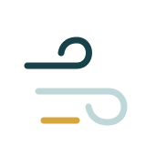

Área base de atención demostrativa.
INSTALACIÓN · MANTENIMIENTO · DIAGNÓSTICO
Información clara antes de solicitar servicio.
Consulta servicios, cobertura y forma de atención desde una sola vista sin mapas reales, precios automáticos ni diagnósticos.
Concepto NEXO Esencial con alcance de una vista.
Una vista
6 servicios
Cobertura demostrativa
Sin dominio incluido

Estado: draft. Nombre e identidad ficticios utilizados exclusivamente con fines demostrativos. No está aprobado para catálogo público ni portafolio principal.
Servicio técnico
Servicios y contenido representado.
El diseño prioriza lo práctico: qué hace, dónde atiende y qué información conviene compartir antes de pedir servicio.
- Instalación
- Mantenimiento
- Diagnóstico inicial
- Limpieza
- Reparación
- Atención comercial
Constructor de mensaje
Constructor de mensaje
Ordena tu solicitud sin dirección exacta, cotización ni diagnóstico automático.
Instalación
Comparte tipo de inmueble, zona general y horario preferido.
Proceso
Una ruta fácil de seguir.
Atención sujeta a confirmación.
No se usa mapa ni coordenadas reales.
Preguntas frecuentes
Condiciones claras antes de publicar.
¿Calcula precio?
No. Evita cotización automática.
¿Da diagnóstico?
No. Solo organiza la solicitud.
¿Incluye dominio?
No en NEXO Esencial. Dominio propio puede cotizarse aparte.
Contacto
Datos reales por configurar con el negocio.
Esta demo no inventa teléfono, correo, dirección ni mapa. En un proyecto publicado se cargarían los canales aprobados por el cliente.
- WhatsApp del negocio: por configurar.
- Horario: por confirmar.
- Zona de atención: por definir.
- Redes sociales: solo si el cliente las autoriza.
NEXO26 DIGITAL
Un servicio local puede verse claro desde una sola página.
Este concepto organiza alcance, navegación, contenido e interacción para mostrar cómo podría verse una solución similar después de recibir materiales y aprobación.